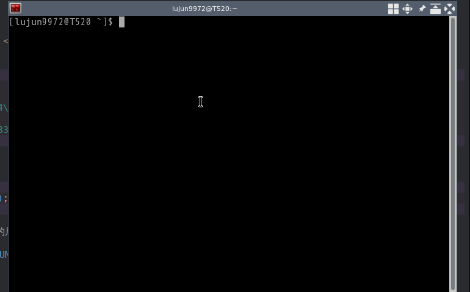

让你的终端雪花飞舞
若你的终端支持显示Unicode，则下面这段脚本可以让你的终端雪花飞舞
while :; do echo $LINES $COLUMNS $(($RANDOM%$COLUMNS)) $(printf "\u2744\n"); sleep 0.1; done|gawk '{a[$3]=0;for(x in a) {o=a[x];a[x]=a[x]+1;printf "\033[%s;%sH ",o,x;printf "\033[%s;%sH%s \033[0;0H",a[x],x,$4;}}'

下面让我们分析一下这段脚本:
首先是一个 while 死循环，循环体内每隔 0.1s 都会执行一段代码
echo $LINES $COLUMNS $(($RANDOM%$COLUMNS)) $(printf "\u2744\n");
这段代码中 $LINES 和 $COLUMNS 分别是终端的行数和列数，它们表示了终端的尺寸。
而 $RANDOM 会产生一个大小在 0 到 32767 之间的随机整数，它跟 $COLUMNS 取余则表示随机挑选一列来生成雪花。
printf "\u2744\n" 则会在屏幕上输出一个 ❄ 并且换行
上面这些信息最终会通过管道送到一段 awk 脚本中:
{a[$3]=0;for(x in a) {o=a[x];a[x]=a[x]+1;printf "\033[%s;%sH ",o,x;printf "\033[%s;%sH%s \033[0;0H",a[x],x,$4;}}
这段 awk 脚本似乎有点复杂，我们慢慢拆开来看:
理解这段 awk 脚本中的要点在于理解 a 数组存放的是什么内容。
这里 a 的下标，即 x 对应的是随机生成❄那一列的列数，而 a 的内容，即 a[x] 则存放的是❄所在那一行的行数。
由于新生成的❄肯定在第1行，因此脚本一开始设置 a[$3] 的值为 0(后面在输出❄之前会执行一句 a[x]=a[x]+1)
后面一段 for 循环是脚本的关键:
for(x in a) { o=a[x]; a[x]=a[x]+1; printf "\033[%s;%sH ",o,x; printf "\033[%s;%sH%s \033[0;0H",a[x],x,$4; }
其中 for(x in a) 就是在遍历所有包含有❄所在列，对每个列进行循环处理。
再来看循环体内的两个赋值语句:
o=a[x] 表示用 o 来存储当前❄所在的行数，因此 o,x 所指定的位置就是❄当前所在的坐标。
而 a[x]=a[x]+1 则很明显是指定本次循环，❄应该所在的行数，即本次赋值后， a[x],x 所指定的位置就是❄飘落一行后的坐标
最后循环体中会输出三段 \033[nnn;mmmH 这样的内容,该语法是用来设置光标所在的行和列的，即表示将光标移动到 nnn 行， mmm 列的位置，然后继续后面的输出。
因此，这三段的意义其实很明确，就是先 将原位置上的❄清空,然后 在下一行位置上输出一个❄,以此模拟 ❄飘落一行的效果,最后将光标输出到最左上角,这样在脚本执行期间你按下的字符也只会影响最左上交那一小块地方而已。